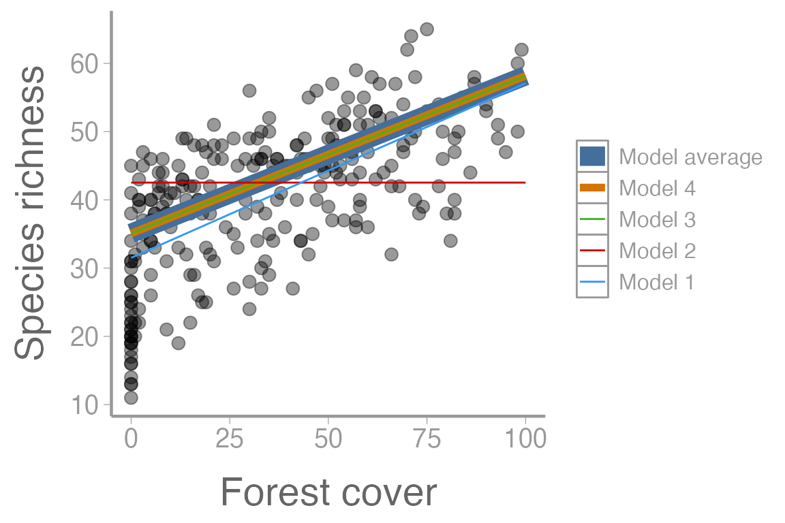

lab14_model_selection.RmdModel fitting
Model selection
Multi-model inference
We will start by fitting several alternative models to explain avian richness across Switzerland:
| elevation | forest | water | sppRichness |
|---|---|---|---|
| 450 | 3 | No | 35 |
| 450 | 21 | No | 51 |
| 1050 | 32 | No | 46 |
| 950 | 9 | Yes | 31 |
| 1150 | 35 | Yes | 50 |
| 550 | 2 | No | 43 |
The four linear models contain different combinations of forest cover, elevation, and water:
fm1 <- lm(sppRichness ~ forest, data = swissData)
fm2 <- lm(sppRichness ~ elevation, data = swissData)
fm3 <- lm(sppRichness ~ forest + elevation + water, data = swissData)
fm4 <- lm(sppRichness ~ forest + elevation + I(elevation^2) + water, data = swissData)Critically, all four of these models represent plausible hypotheses about factors that influence avian richness. We have no a priori knowledge of which model might be a better explanation for observed patterns.
Let’s look for closely at the output from model 4:
summary(fm4)
#>
#> Call:
#> lm(formula = sppRichness ~ forest + elevation + I(elevation^2) +
#> water, data = swissData)
#>
#> Residuals:
#> Min 1Q Median 3Q Max
#> -11.314 -3.205 -0.377 3.334 15.083
#>
#> Coefficients:
#> Estimate Std. Error t value Pr(>|t|)
#> (Intercept) 4.52e+01 1.29e+00 35.14 < 2e-16 ***
#> forest 2.31e-01 1.28e-02 18.11 < 2e-16 ***
#> elevation -1.02e-02 2.57e-03 -3.95 0.0001 ***
#> I(elevation^2) 6.10e-08 9.66e-07 0.06 0.9497
#> waterYes -3.01e+00 6.82e-01 -4.42 1.5e-05 ***
#> ---
#> Signif. codes: 0 '***' 0.001 '**' 0.01 '*' 0.05 '.' 0.1 ' ' 1
#>
#> Residual standard error: 4.95 on 262 degrees of freedom
#> Multiple R-squared: 0.793, Adjusted R-squared: 0.79
#> F-statistic: 251 on 4 and 262 DF, p-value: <2e-16What does each parameter represent?
summary.aov(fm4)
#> Df Sum Sq Mean Sq F value Pr(>F)
#> forest 1 13311 13311 542.40 < 2e-16 ***
#> elevation 1 10820 10820 440.89 < 2e-16 ***
#> I(elevation^2) 1 7 7 0.27 0.6
#> water 1 479 479 19.52 1.5e-05 ***
#> Residuals 262 6430 25
#> ---
#> Signif. codes: 0 '***' 0.001 '**' 0.01 '*' 0.05 '.' 0.1 ' ' 1Using the ANOVA table, we could compute AIC using the equation \(AIC = n \log(RSS/n) + 2K\), where RSS is the residual sum-of-squares. However, we will use the more general formula: \(AIC = −2L(\hat{\theta}; y) + 2K\).
First, let’s calculate AIC by hand:
# Sample size
n <- nrow(swissData)
# Log-likelihood for each model
logL <- c(logLik(fm1), logLik(fm2), logLik(fm3), logLik(fm4))
# Number of parameters
K <- c(3, 3, 5, 6)
# AIC
AIC <- -2 * logL + 2 * K
# delta AIC
delta <- AIC - min(AIC)
#AIC Weights
w <- exp(-0.5 * delta)/sum(exp(-0.5 * delta))And now we can create the AIC table:
# Put vectors in data.frame
ms <- data.frame(logL, K, AIC, delta, w)
rownames(ms) <- c("fm1", "fm2", "fm3", "fm4")
ms <- dplyr::arrange(ms, -w) # arrange by descending weight
kable(ms, digits = 2)| logL | K | AIC | delta | w | |
|---|---|---|---|---|---|
| fm3 | -803.6 | 5 | 1617 | 0.0 | 0.73 |
| fm4 | -803.6 | 6 | 1619 | 2.0 | 0.27 |
| fm2 | -934.1 | 3 | 1874 | 257.0 | 0.00 |
| fm1 | -939.0 | 3 | 1884 | 266.9 | 0.00 |
Just to check our results, we can do the same thing using
R’s built-in AIC() function:
| df | AIC | |
|---|---|---|
| fm3 | 5 | 1617 |
| fm4 | 6 | 1619 |
| fm2 | 3 | 1874 |
| fm1 | 3 | 1884 |
Note that ff we had used the residual sums-of-squares instead of the log-likelihoods, the AIC values would have been different, but the \(\Delta\)AIC values would have been the same. Either approach is fine with linear models, but log-likelihoods must be used with GLMs and other models fit using maximum likelihood
Based on AIC scores, model 3 appears to be the “best” model but there’s also reasonable support for other models. What if we want to predict avian richness using all of the models? Why might we want to do this?
First, let’s estimate the expected number of species at 1000m elevation, 25% forest cover, and no water, for each model:
(predData1 <- data.frame(elevation = 1000,
forest = 25,
water = "No"))
#> elevation forest water
#> 1 1000 25 No
E1 <- predict(fm1, newdata = predData1, type = "response")
as.numeric(E1) # remove names (optional)
#> [1] 37.9
E2 <- predict(fm2, newdata = predData1, type = "response")
as.numeric(E2)
#> [1] 42.53
E3 <- predict(fm3, newdata = predData1, type = "response")
as.numeric(E3)
#> [1] 40.89
E4 <- predict(fm4, newdata = predData1, type = "response")
as.numeric(E4)
#> [1] 40.86What is the expected number of species at 1000m, 25% forest cover, and no water, averaged over all 4 models?
E1 * w[1] + E2 * w[2] + E3 * w[3] + E4 * w[4]
#> 1
#> 40.88What if we want to predict species richness over range of forest cover? First, the predictions for each model:
predData2 <- data.frame(forest = seq(0, 100, length = 50),
elevation = 1000,
water = "No")
E1 <- predict(fm1, newdata = predData2)
E2 <- predict(fm2, newdata = predData2)
E3 <- predict(fm3, newdata = predData2)
E4 <- predict(fm4, newdata = predData2)
Emat <- cbind(E1, E2, E3, E4)How do we model-average these vectors?
Eavg <- Emat %*% wBe sure you understand what R is doing here and how it
results in the appropriate predictions.
And plot the predictions from each model and the model averaged results. First we need to combine the predictions into a single data frame. Then we’ll use some creative (and perhaps not every effective) sizing so that we can see the overlapping predictions from models 3, 4, and the model-averaged results:
library(ggplot2)
predDF <- data.frame(pred = c(Eavg, E1, E2, E3, E4),
Model = rep(c("Model average", "Model 1", "Model 2", "Model 3", "Model 4"),
each = length(E1)),
forest = rep(predData2$forest, 5))
predDF$Model <- factor(predDF$Model,
levels = c("Model average", "Model 4", "Model 3", "Model 2", "Model 1"))
ggplot() +
geom_point(data = swissData, aes(x = forest, y = sppRichness), alpha = 0.4) +
geom_line(data = predDF, aes(x = forest, y = pred, color = Model, size = Model)) +
scale_size_manual(values = c(5, 2, 0.5, 0.5, 0.5)) +
scale_x_continuous("Forest cover") +
scale_y_continuous("Species richness")
Create an R markdown report, using the jayData from lab
12, to do the following:
Fit four linear models of jay abundance. Include elevation all four models. Include at least one interaction, and one quadratic term for elevation.
Create AIC table by hand, not using R’s AIC
function
Model-average regression lines of jay abundance and elevation. Plot the averaged regression line along with the regression lines from each model.
Bonus: Create a map showing the model-averaged estimates of jay
abundance on Santa Cruz Island. (Hint: use predict() with
cruzData supplied as the newdata
argument)
As always:
Be sure the output type is set to:
output: html_document
Title the document:
title: "Lab 14 assignment"
Be sure to include your first and last name in the
author section
Be sure to set echo = TRUE in all R
chunks so we can see both your code and the output
Please upload both the html and .Rmd
files when you submit your assignment
See the R Markdown reference sheet for help with creating
R chunks, equations, tables, etc.